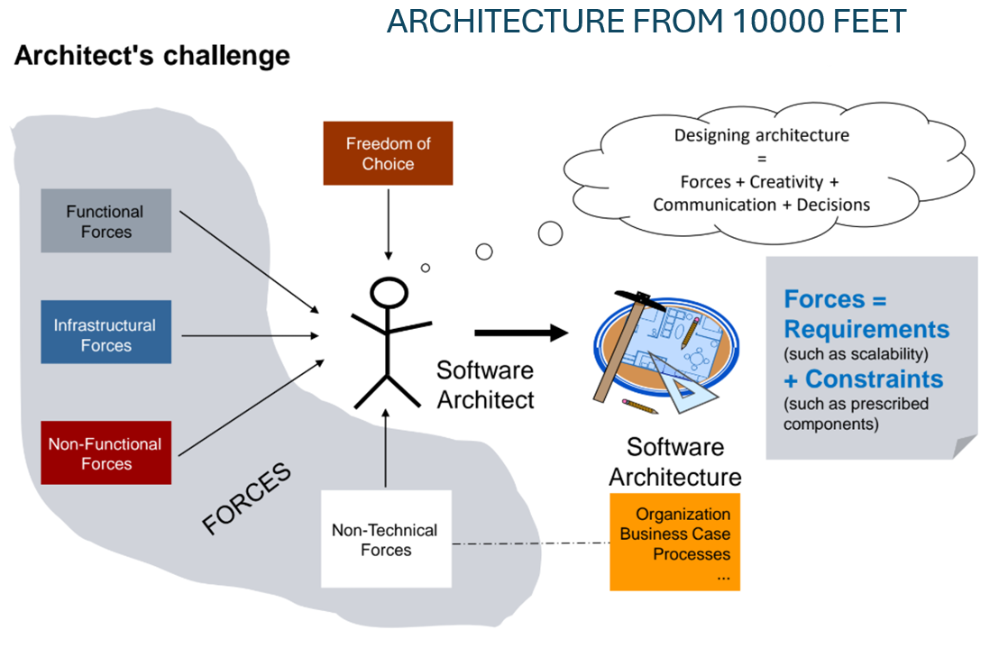
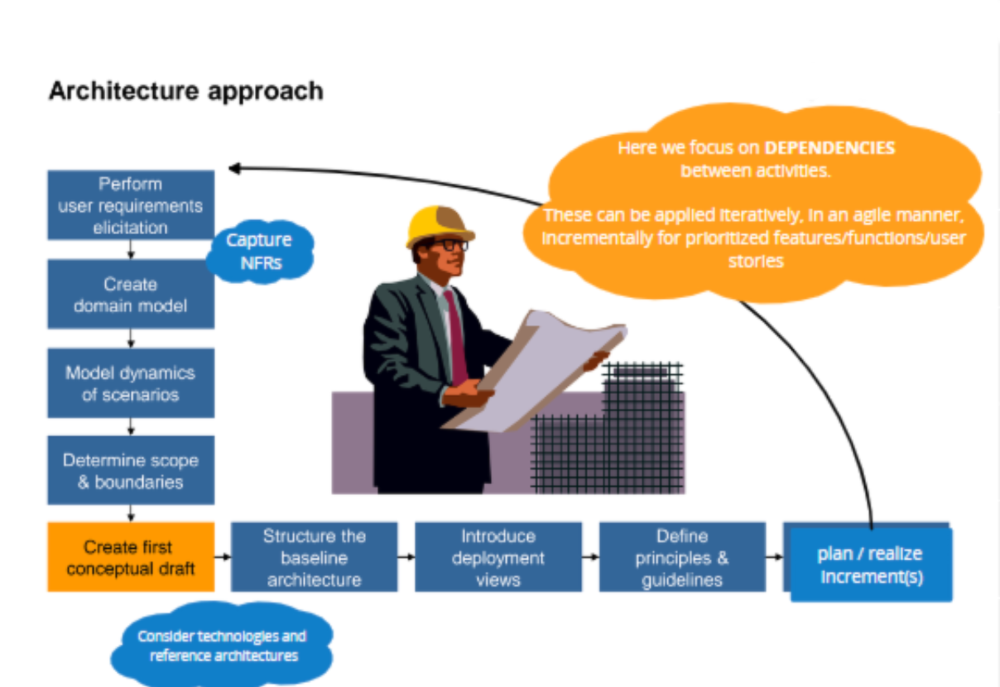

🔵 Systematic Architecture Design
#Start and the basic equation (Forces)
Architecture does not emerge in a vacuum. It is the result of the equation: Forces + Creativity + Communication + Decisions.
The degree of freedom is determined by "Freedom of Choice".
Forces = Requirements + Constraints.
Requirements are divided into
- Functional requirements
- Non functional requirements = quality
Constraints can be divided into
- Infrastructure constraints (system, database, legacy framework, networking)
- Non-technical constraints (organization, business, processes)

Forces and constraints determine the space in which the architect operates. The size of that space determines "Freedom of Choice". If needed, the space for creativity can be expanded through elicitation and negotiation of requirements.
#ASR (Architecturally Significant Requirements)
These are requirements (functional and quality-related) with a system-wide impact.
They are identified using the method
"5 miles wide, 5 inches deep"
- you perform a shallow scan of all requirements across the breadth
- you identify risky candidates
- only for those you perform a detailed deep dive
#Architecture maturity phases
Architecture grows incrementally, from learning to result:
- Initial draft: Initial sketch, used for discussion.
- Walking Skeleton: First implementation. You select a use case with the highest risk or business value and build it end-to-end in production quality (including consideration of quality attributes).
- MVP (Minimum Viable Product): Used for learning and validation of market acceptance.
- MMP (Minimal Marketable Product): The first version that can actually be sold and generates profit (Earn). (Practice addition: Today this is often replaced by the term MLP - Minimum Lovable Product).
#Strategic vs. Tactical design
- Strategic: Decisions with system-wide impact (operating system, programming language, core framework).
- Tactical: Local decisions at the component level (configuration, error handling inside a service).
- They are connected by "Infrastructure for tactical design".
#Architecture Approach (L-Model)
The L-model defines a systematic way of working for an architect (workflow) from the initial assignment to implementation. Step by step, it forms a visual "L", where activities follow one another and are applied iteratively and agilely.
#Vertical phase (Analysis and preparation)
- Perform user requirements elicitation: Discovering user needs and capturing non-functional requirements (NFRs).
- Create domain model: Defining core entities and relationships in the domain.
- Model dynamics of scenarios: Modeling system behavior over time.
- Determine scope & boundaries: Clear definition of system scope and boundaries.
#Horizontal phase (Design itself)
Create first conceptual draft: First rough concept, considering technologies and reference architectures.
Structure the baseline architecture: Creating the basic supporting skeleton of the architecture.
Introduce deployment views: Introducing views of physical deployment.
Define principles & guidelines: Defining architectural principles and development guidelines.
Plan / realize increment(s): Planning and implementing gradual prioritized increments.

#Pyramid model (Level of detail)
It limits the depth of documentation. Rule: Baseline architecture must be sufficiently complete to steer development, but simple enough to be communicated.
- It focuses on a maximum of 3 levels: System -> Subsystem/Service -> Component.
- Across all levels, Cross-cutting concerns run through (cross-cutting matters such as security, logging).
#Conway's law
- "The design of a system is doomed to reflect the communication structure of the organization".
- (Practice addition: In exams, they often ask about the so-called Inverse Conway Maneuver. It means you first design the ideal software architecture, and according to it you reorganize communication flows and teams in the company, to prevent a poor design caused by a poor company structure).
#Incremental cycle
Architecture is built in cycles driven by clear priorities: Determine Forces -> Create/extend architecture (Next increment) -> Assess -> Refactor.
#Practical example: Systematic design of a universal component (SecureFirmwareUpdate)
#Situation (Field and Forces)
We were tasked with creating Flexibility Manager for Operational Plannikng.
The team consisted of experienced developers with DevOps knowledge, but domain know-how was missing.
Therefore, we first had to map the field (Forces). We created a decision group and included representatives of individual products, then clarified boundaries - we revealed infrastructure and non-technical constraints and identified key ASRs (Architecturally Significant Requirements) such as speed, response time, and logging style.
Application of the L-Model and maturity phases
- ** Instead of a complex UML domain model, we drew a pragmatic diagram of entities and communication flows.
- Initial draft: We inserted this diagram into the initial ARCH document and subjected it to review by all stakeholders.
- Walking Skeleton: The first real delivery was an empty skeleton. It contained defined interfaces, parameters, and setup for unit/functional tests. It was possible to compile it and run tests (even though they logically failed). The key point was that this tangible skeleton gave us alignment from future users across products.
- Incremental growth and MVP: In sprints, we filled the skeleton with logic and added e2e mocked tests. Soon we started integrating a partially functional solution (MVP) with selected users, to collect feedback and uncover integration issues (the "Learn" phase).
Reality and lessons learned (Non-technical forces in practice) Although technically a solution with potential for company-wide deployment was created, it reached the stage of real profit and adoption (MMP/MLP) only partially. Strong non-technical Constraints intervened: users ultimately decided to continue modifying their own proprietary solutions. It was faster for them and they had greater trust in their own code.
It is a perfect demonstration that even a systematically designed architecture can fail when "Freedom of Choice" hits psychological and organizational boundaries.